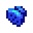

Pressure Nozzle
| Pressure Nozzle | |
|  | |
| Place on a sprinkler to increase its watering range. | |
| Information | |
| Source | Qi's Walnut Room for |
| Sell Price | |
A Pressure Nozzle is a sprinkler upgrade that increases the watering range of Sprinklers. The range is increased to:
- Sprinkler: 3x3 (now reaches the corner tiles)
- Quality Sprinkler: 5x5
- Iridium Sprinkler: 7x7
Pressure Nozzles can be purchased in Qi's Walnut Room at a cost of  20 for 4 nozzles, and rarely drop from monsters in the Skull Cavern during the Qi's Hungry Challenge or Skull Cavern Invasion quests. Additionally, Slimes may rarely drop it when slain in The Mines during Danger In The Deep quest or after activating the Shrine of Challenge.
20 for 4 nozzles, and rarely drop from monsters in the Skull Cavern during the Qi's Hungry Challenge or Skull Cavern Invasion quests. Additionally, Slimes may rarely drop it when slain in The Mines during Danger In The Deep quest or after activating the Shrine of Challenge.
A sprinkler may not be equipped with both a pressure nozzle and an Enricher at the same time.
Note: While the item icon shows only one nozzle, it is sufficient to upgrade one entire sprinkler (one Pressure Nozzle covers all 4 sprinkler nozzles).
Tip
When using pressure nozzles on Iridium Sprinklers, it is possible to automatically water the entire greenhouse while leaving only a single tile unplanted.
History
- 1.5: Introduced.